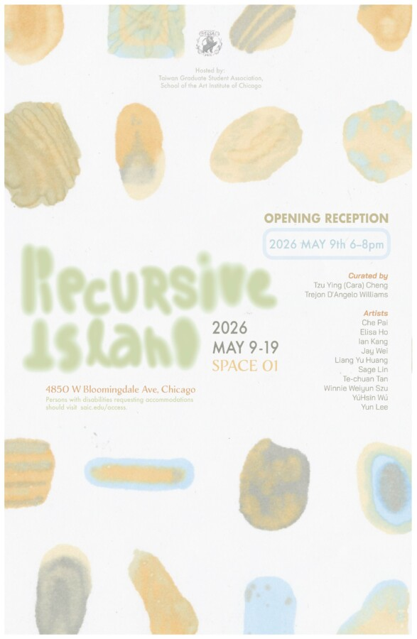

Recursive Island
Hosted by:
Taiwan Graduate Student Association, School of the Art Institute of Chicago
Taiwan’s geographic scale closely mirrors that of Lake Michigan, a parallel that produces a distinct mode of spatial and psychological projection for those living abroad. The island’s outline is overlaid onto the lake like a semi-transparent cartographic trace, generating a doubled imaginary in which the figure of a lake-within-an-island and an island-within-a-lake becomes a conceptual frame. This superimposition inaugurates a condition where geographic displacement is mediated through layered spatial imaginaries.
Recursive Island takes this act of replication as its conceptual departure point. When the boundaries between geography and psychology are projected onto another city, the island is no longer a fixed landscape but a state in constant formation. Through new rhythms and senses, people piece together ways of returning—not to the same origin, but to a shifting sense of belonging.
The idea of an “internally generated insularity” forms the core of this exhibition. As people begin to rebuild familiarity and safety in an unfamiliar place, the island quietly takes shape again. Between water and memory, something begins to form—a space both strange and known, where belonging is continuously recalculated and redefined.
Recursion allows the island to stay in motion. It serves not only as a geographic metaphor but also as a psychological mechanism through which boundaries are internalized and centers repositioned. This island is not built on isolation but on connection, extending itself elsewhere to create another place of dwelling.